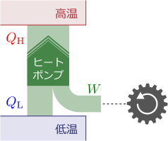
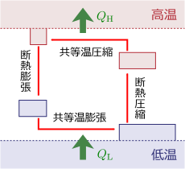
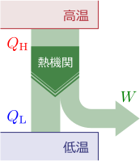

5.冷房・暖房の最大効率
可逆的な装置の場合に、効率が最大になる。
ヒートポンプの最大効率が知りたい

ヒートポンプの最大効率を求めたい。ヒートポンプとは、右図のように、低温側からエネルギー
を奪い、高温側にエネルギー
を加える装置である。低温側はより低温になり、高温側はより高温になる。典型的な利用例はエアコンである（低温側に人がいれば冷房、高温側にいれば暖房）。外部（弾み車で代表している）から与えるエネルギー
をなるべく少なくしつつ、汲み上げる熱エネルギー
を大きくしたいわけである。エネルギー保存則より
が成り立つ。（添え字HはHigh、LはLowの意味。）
ヒートポンプの原理は、小さな容器
（作業容器という）を用いて行う次の操作の繰り返しである：低温側に
を接触させた状態で
を膨張させ低温側からエネルギーを奪う→高温側に接触させた状態で
を圧縮し高温側にエネルギーを渡す。ただしヒートポンプを継続的に動かすためには、何らかのサイクル構造を持つ必要があるので、1サイクル後にはヒートポンプが元の状態に戻る必要がある。
効率が最高なのは、外部からエネルギーを与えずに温度を変えられること、即ち、
であるが、これは実現できない。なぜなら、その過程は、不可逆過程である「異なる温度の物体同士を接触さ背た時に温度が等しくなる過程」の逆過程だからである。逆に、効率が最悪なのは、低温側が存在しない場合、即ち、
であるが、これにはいくらでも近づけることができる。例えば、運動エネルギー
をほぼ全て摩擦熱として高温側に与えるような場合である。
このように、ヒートポンプの効率と可逆性が関係していそうである。効率が最高になるのは、おそらく可逆過程だろう。この章では、これを実際に示す。
5.1ヒートポンプの最大効率
この節では、エントロピーを考えることにより、ヒートポンプの効率に対する不等式が得られることを示す。ヒートポンプの1サイクルでの部屋の温度変化は、十分小さく無視できるとする。
熱エネルギー によるエントロピーの変化：式()
まず、1つの容器に対し、微小な熱エネルギー
を加えた時のエントロピーの変化
を求める。
前章で見たように、エントロピー
の微分は
である。今は体積の変化は考えていないので、右辺第2項はゼロである（
）。また、
は、体積一定で温度を
だけ変えるのに必要なエネルギーであり、今の場合、容器に与えられた熱エネルギー
に等しい。よって、
は
となる。
ヒートポンプによるエントロピーの変化：式()
冒頭のヒートポンプを含む系の場合、2つの容器からなるので、全エントロピーは低温側および高温側のエントロピーそれぞれ
の和となる。よって、式(
)を用いて
なお、ヒートポンプ装置自体のエントロピー変化はゼロとしている
（1サイクル後には元に戻っているため）。
系全体は孤立しているとすれば、エントロピー増大則により式(
)は
を満たすので
が成り立つことになる。等式は、可逆な場合に成り立つ。
厳密に言えば、エントロピーは平衡状態でしか定義していないので、平衡状態とは言えない作動中のヒートポンプの場合、エントロピーは定義されていない。しかし、最大効率を考えるという目的のためには問題ない。サイクルの終了時に平衡状態になっていない場合でも、そのまま時間がたてば平衡状態になるからである。
ヒートポンプ（暖房）の効率：式()
それではヒートポンプの最大効率を考えよう。まず暖房の場合である。どれだけの熱エネルギーを高温側に加えられるかが興味の対象となる。式(
)を、弾み車から奪った運動エネルギー
と、高温側に与えた熱エネルギー
の式にしたい。式(
)の
を消去すればよいので、エネルギーの関係式(
)
を代入すると：
が得られる。効率が最大になるのは、等式が成り立つ場合であり、可逆な場合に成り立つ。最大効率に対応する
赤字部分を最大成績係数という。最大成績係数は常に1より大きいので、費やしたエネルギー
よりも多くの熱エネルギー
を汲み上げることが可能である
（可逆に十分近いヒートポンプであれば）。
ヒートポンプ（冷房）の効率：式()
次は冷房の最大効率である。低温側からどれだけのエネルギーを奪えるかを知りたいので、式(
)にエネルギーの関係式
を代入して
を消去すればよい：
等式は、可逆な場合に成り立つ。
の場合、即ち
と
が十分近い場合、
赤字部分
（最大成績係数）は1より大きくなり、費やしたエネルギー
よりも多くの熱エネルギー
を奪うことが可能である。
最大効率の例：逆カルノーサイクル
ヒートポンプの最大効率は、可逆な場合に達成できることが分かった。そのような可逆なヒートポンプは、原理的に構成することができる。実際、以下の【5.1-注1】のような逆カルノーサイクルを使えばよい。これは、冒頭で述べたヒートポンプのサイクルを可逆過程だけで構成したものである。
【5.1-注1】逆カルノーサイクル

逆カルノーサイクルは、右図のようなヒートポンプサイクルである。全ての操作は準静的に行われる。色が同じ個所は同じ温度である。共等温膨張によって低温側からエネルギー
を吸収し、共等温圧縮によって高温側にエネルギー
を放出する。可逆であるため、最大の効率を持つ、即ち、式(
)および式(
)の等号が成立する。
（逆カルノーサイクルの効率は最大ではあるが、可逆性を持たせるためには非常にゆっくり動かす必要があるので、時間的な効率という点では最悪である。）
なお、これを逆にたどるようなサイクルをカルノーサイクルという。これは、用意された低温源と高温源から力学的なエネルギーを取りだすサイクルである。
5.2（参考）熱を全て動力に変えることはできない

ところで、ヒートポンプは外部エネルギーを温度差に変換するものであったが、逆向きに作動させると、温度差を力学的なエネルギー
に変換する装置としても使える（右図）。このように熱を動力に変換する装置を、熱機関という。
特に興味があるのは、高温側から奪った熱
を全て
に変換できることが可能かという問題である（
）。この場合、
低温側は不要になり（あったとしても触媒としてしか作用しない）、高温熱源だけから
を取り出すようなサイクルがあることになる。即ち、温度差が不要なエンジンが作れることになる。そうすれば、例えば、空気や地面から熱を奪って運動エネルギーに変換することにより、事実上、燃料なしで永久に動き続ける車が作れるのではないか、という期待が生まれるわけである。このような熱機関を第二種永久機関という。
この節では、第二種永久機関が不可能であることを示す。（なお、第一種永久機関というのもあるが、これは、エネルギー保存則を破ってエネルギーを生成するような装置であり、これも不可能である。第二種永久機関のほうはエネルギー保存則を破らない。）
第二種永久機関は存在しない：式()
熱機関の場合、式(
)に対応する式は
である
（エネルギーの流れの方向が逆になっているので、符号も逆になる）。これに、エネルギー保存を表す
を代入して
を消去すると
となる。
赤字部分を最大熱効率といい、1よりも小さな値である。よって、奪った熱
の全てを運動エネルギー
に変えるようなサイクルは存在せず、必ず、低温熱源に熱を捨てなければならない。即ち、第二種永久機関は存在しない。
最大熱効率が実現するのは、可逆な場合である。例えば、【5.1-注1】の逆過程であるカルノーサイクルが最大熱効率を持つ。（熱効率が最悪なのは、高温熱源から低温熱源にそのまま熱を捨てる場合、即ち、
の場合である。）